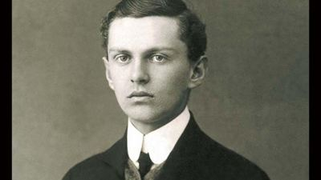
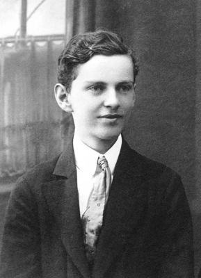

Laici
Laik · Profesor · Katolički intelektualac
Bl. Ivan Merz
1896. – 1928.
Katolički laik, profesor i odgojitelj mladih posvetio je život Euharistiji, liturgijskoj obnovi i apostolatu. Njegovo djelovanje obilježili su vjernost Crkvi i služenje hrvatskoj mladeži.
Tekst je sažet i prilagođen uz pomoć umjetne inteligencije.

Izvor slike


Izvor slike


Izvor slike
- Spomendan
- 10. svibnja
- Zaštitništvo
- Mladež
- Životni vijek
- 1896. – 1928.
- Djelovanje
- Mladi i odgoj · Obrazovanje i poučavanje vjere · Euharistija i pobožnosti
- Razdoblje
- 19., 20. stoljeće
- Rođenje
- 16. prosinca 1896., Banja Luka
- Smrt
- 10. svibnja 1928., Zagreb
- Beatifikacija
- 22. lipnja 2003., Banja Luka; papa Ivan Pavao II.
- Počivalište
- Bazilika Srca Isusova, Zagreb
- Laički poziv
- Zavjet trajne čistoće
Životopis
Ivan Merz rođen je 16. prosinca 1896. u Banjoj Luci, a kršten početkom sljedeće godine. Odrastao je u sredini u kojoj vjera nije bila središte svakodnevice. Gimnazijski profesor Ljubomir Maraković pomogao mu je otkriti katoličku duhovnu i kulturnu baštinu. Nakon kratkoga boravka na vojnoj akademiji 1915. započeo je studij u Beču, zamišljajući budućnost povezanu s poučavanjem mladih.
Mobilizacija ga je 1916. odvela iz studentskoga života, a talijanska bojišnica suočila s ratnom patnjom i smrću. Dnevnički zapisi svjedoče kako je to iskustvo pretvarao u osobno preispitivanje, molitvu i odlučnost da život preda Bogu. Nakon rata studirao je u Beču i od 1920. do 1922. u Parizu, na Sorboni i Katoličkom institutu. U Zagrebu je predavao francuski na Nadbiskupskoj klasičnoj gimnaziji te 1923. doktorirao radom o liturgiji i francuskim piscima.
Njegova odluka za laički život, uz zavjet trajne čistoće, postala je oblik crkvenoga poslanja. Slobodno vrijeme posvećivao je mladima, katoličkom tisku i proučavanju filozofije, teologije i crkvenoga učiteljstva. U Hrvatskome orlovskom savezu povezivao je odgoj s euharistijskim životom, žrtvom i apostolatom. Katolička akcija za njega je značila odgovornost vjernika za Crkvu i društvo, uz privrženost papi i sudjelovanje u liturgijskoj obnovi.
Njegovu javnu zauzetost nosili su svakodnevna pričest, klanjanje, razmatranje i samoodricanje. Zamisao o zajednici posvećenih laika poslije je nastavila Marica Stanković sa Suradnicama Krista Kralja. Patnju je prikazivao za uspjeh apostolata, a pred smrt posebno za hrvatsku mladež. Umro je 10. svibnja 1928. u Zagrebu; počiva u bazilici Srca Isusova. Ivan Pavao II. proglasio ga je blaženim u Banjoj Luci 22. lipnja 2003. kao primjer mladima i laicima.
Život i nasljeđe
Isusovci su objavili Merzov zapis o pričesti vojnika kod Bozena u ožujku 1917. godine. U njemu promatra kontrast između ljepote alpske prirode i iscrpljenih ljudskih tijela te euharistiju razumije kao znak drukčije ljudske sudbine. To je osoban dokument ratnoga iskustva, uz kasnija sažimanja njegova obraćenja. Pokazuje kako se književna osjetljivost i liturgijski interes oblikuju zajedno još prije pariškoga studija i zagrebačkoga apostolata. Njegova kasnija zauzetost za liturgiju tako ima tragove i u vlastitim ratnim bilješkama.
Tekst je sažet i prilagođen uz pomoć umjetne inteligencije.
Pročitaj više na izvornoj stranici ↗